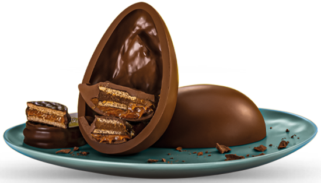
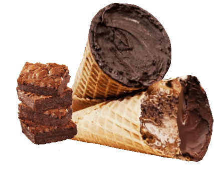

A RS DOCES é uma das lojas mais conhecida da cidade. Alem de ter os doces mais gostosos, tambem posssui uma grande variedade de sabores e coberturas, com preços acessiveis tambem aceitamos todos os cartões.
Alem dos melhores preços a mesma esta localizada no centro da cidade em um local arejado, tranquailo e bastante confortavel com uma vista esplêndida do nosso Rio Parnaiba,com um amplo espaço pra criancas se divertirem.
Um dos doces mais pedidos,ovos de colher têm uma quantidade bem generosa de recheio, que vai variar de acordo com a criatividade de quem estiver preparando a receita. O importante é ão economizar! O ovo de colher simples ou mais elaborado virou uma tendência quando falamos de chocolate para a Páscoa. E, por ser super-artesanal, o doce tem sido usado por muitos empreendedores para completar a renda nessa época do ano, mas também pode ser preparado em casa para a família, como uma alternativa mais barata aos ovos das lojas. Não há muito segredo sobre como conseguir aquele formato bonito de ovo: um bom chocolate temperado (mexido em uma superfície até esfriar) e uma boa forma já fazem o trabalho. o mesmo e ideal para presentes de vareas datas comemorativas estando disponiveis vários tipos de sabores e coberturas.
é um doce feito na casquinha de sorvete a mesma é tolamente ou parcialmente coberta de chocolate e leva um recheio de vários sabores e coberturas a mesma pode pesar ate 150g ou mais, varia de acordo com o tamanho da casquinha, um doce muito delicioso...
é um bombom feito de chocolate branco ou preto, onde pode levar 1 ou 2 topos de recheio, em aguns casos coloca-se ate pedaços de frutas junto ao recheio.

Horario de Funcionamento
Acesse o nosso Livro de Receitas e veja os ingredientes e tadas as etapas de como fazer o seu proprio doce em casa.